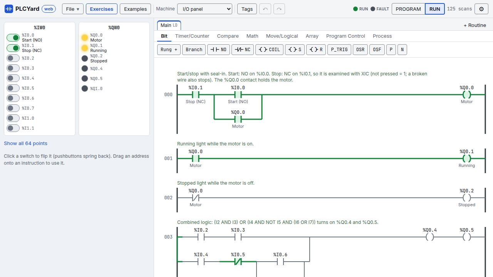
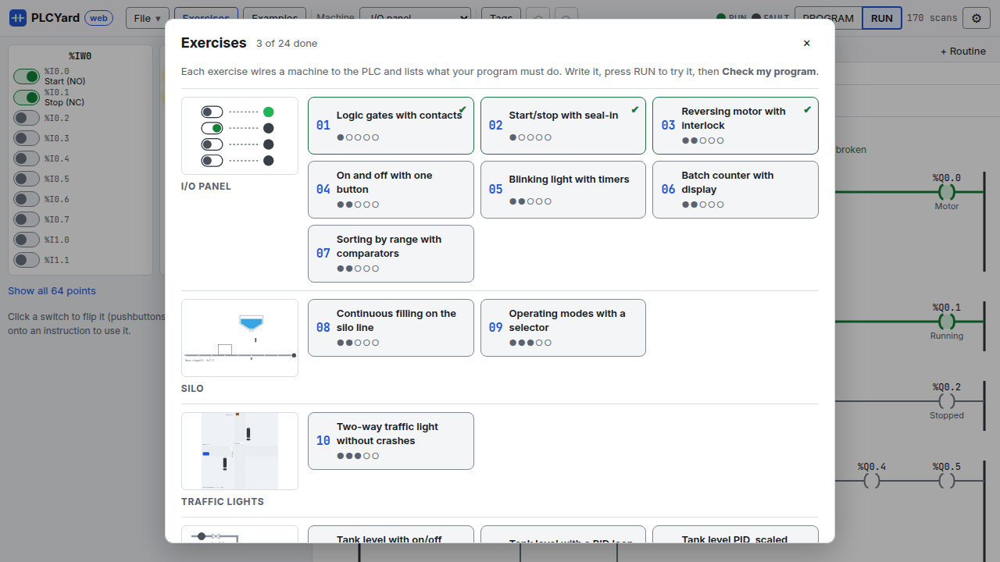
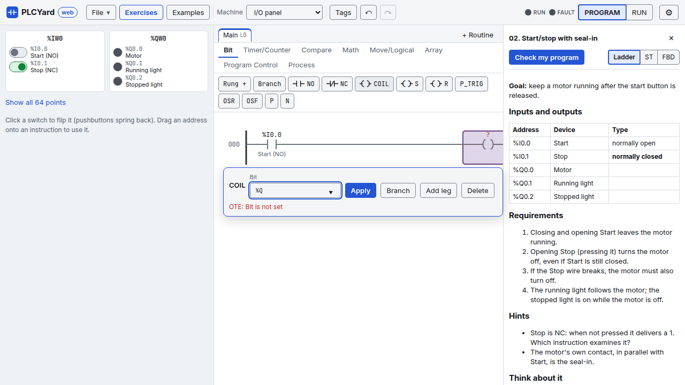

PLCYard in the browser¶
Open PLCYard web: the same PLC, simulations and exercise checker as the desktop app, running in your browser. Nothing is installed and nothing is sent anywhere: the PLC runs on your computer (the first visit downloads it, a few megabytes; later visits start from the browser's cache).

The screen¶
- Header, left to right:
- File: a new program in ladder, structured text or function blocks, open or save a
.plcyfile (the desktop app opens it too), and the examples. - Exercises and Examples: the pickers below.
- Machine: the simulation wired to the PLC.
- Tags (named memory), undo and redo.
- The PLC: the RUN and FAULT lights, and PROGRAM / RUN. RUN sends your program to the PLC and starts it. If you edit while it runs, Send changes appears: the PLC keeps running the old program until you press it.
- ⚙: the notation (IEC symbols
%I0.0or mnemonics, see Notations), the welcome tour again and a link to this wiki.
- File: a new program in ladder, structured text or function blocks, open or save a
- Left: the machine. Buttons are held while you press them, switches stay where you put them. Below it, the list of its devices with their addresses; the I/O panel shows only the points your program or the exercise uses (Show all 64 points for the rest).
- Middle: the editor, with a tab per routine (+ Routine adds one, see Routines and blocks).
- Right: the exercise, when one is open.
The first visit shows a short welcome; ⚙ → How it works shows it again.
Exercises and examples¶

Exercises opens the 24 exercises grouped by machine, each group with a picture of its machine, each exercise with its level (●○○○○ easy to ●●●●● hard) and a ✔ once you passed it (kept in your browser). Opening one wires its machine, names its devices and gives you an empty program.
Examples opens the finished programs, also grouped by machine with the language they are written in. Opening an example replaces the program in the editor: save yours first (File → Save) if you want to keep it.
Writing a program¶

- Ladder: pick an instruction family (Bit, Timer/Counter, Compare…) and click an instruction: it goes after the selected one, or in a new rung. Rung + adds a rung, Branch puts the selected instruction in a parallel branch.
- The operand form opens right next to what you selected. Type an address or a tag: the list suggests the machine's devices by name ("Start (NO)"), the named I/O points and your tags. Enter applies, Esc closes. You can also drag an address from the machine onto an instruction.
- An instruction with a problem (no address yet, a tag that does not exist, the wrong type) has a red dashed box; point at it to read why. The program only goes to the PLC once every problem is fixed.
- Structured text: a code editor with colours, line numbers, problems as you type and a watch list of the values while the PLC runs.
- Function blocks: click a block or drag it onto the diagram, drag from an output pin to an input pin to wire them, select a block to set its operands. See Function block diagram.
Running and checking¶
- Press RUN. The energized parts of the ladder turn green, the machine moves.
- Play with the machine: press its buttons, open its valves, park a car…
- With an exercise open, Check my program (top of the exercise) runs every requirement against your program on a fresh machine, much faster than real time, and lists what passed and what failed with the reason. Long exercises can take a few seconds.
Ladder / ST / FBD next to the Check button starts the exercise again in another language.
On a phone¶
On a narrow screen PLCYard shows one view at a time. The bar at the bottom switches between Machine, Program and Exercise and has the RUN button (it reads Send when you edited while running, Stop to go back to program mode) with the RUN light. The program view has undo, redo, Tags and zoom (− +); ladder and function block diagrams scroll with a finger.
Phones cannot drag, so: select an instruction, go to Machine and tap an address: it goes into the operand box and you are back in the program.
Install it, use it offline¶
After the first visit PLCYard works without internet: the browser keeps the page, the PLC and the exercises (⚙ shows "Works offline on this device"). A new release is fetched the next time you are online, and the page offers to reload.
To have it as an app with its own icon:
- Android (Chrome), Windows, Linux, macOS (Chrome or Edge): ⚙ → Install PLCYard as an app, or the install icon in the address bar.
- iPhone, iPad (Safari): the Share button → Add to Home Screen.
Your programs and progress stay in that browser on that device; use File → Save to keep a program as a file or move it to another device.
What stays in the desktop app¶
Data types, forcing, the PID setup dialog, single-scan stepping and comparing your solution with
the reference solutions in three languages. A .plcy saved in the browser opens in the desktop
app and the other way round.